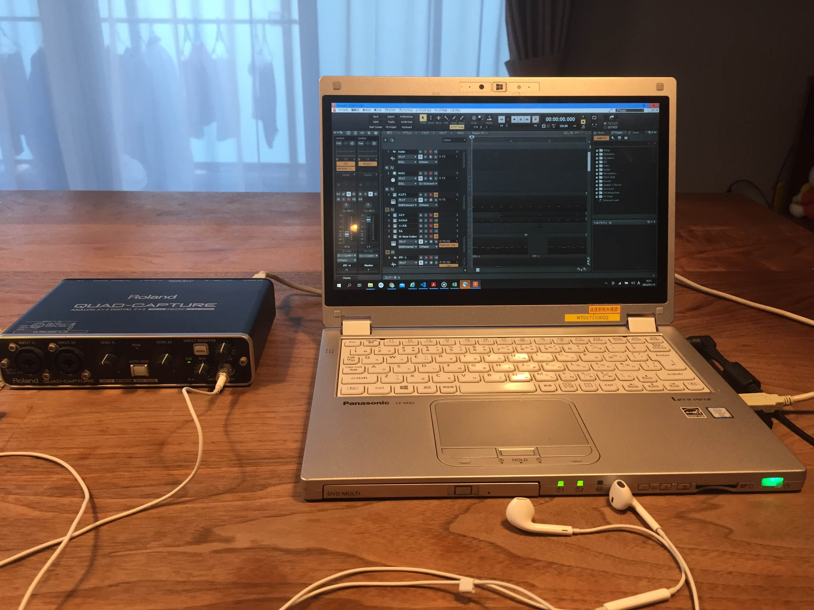

オリジナル音楽制作の始め方
2022.01.19 UG

はじめに。
今から音楽を始めようと思っている人、またこれまでにバンドか何かしていてオリジナル音楽を始めようと思った人。
ハードルが髙いように思えますが、今はパソコン一台とその他周辺機器が少しあれば家にスタジオが作れる時代です。
このサイトでは出来るだけお金をかけずにスタートできるコツをお伝えしていきます。
さあ、あなたも今すぐにオリジナル音楽制作を初めてみよう！
オリジナル曲を制作するにあたり３つの要素があります。
・録音・制作体制の準備
・楽器の演奏
・オリジナル曲作成
これらについて一つずつ解説していきましょう
録音・制作体制の準備

上の写真をご覧ください。パソコンと左側にある機械、イヤフォン
これだけでオッケーです。
まず、音楽を録音して保存するための箱が必要です。パソコンの画面に
写っているソフトがそれにあたりますが、DTMソフト、DAWと呼ばれるものです。
バンドをやられている方はMTRをご存じかと思いますが、こちらはMTRをパソコン内で
操作録音できるようにしたものです。
下のようなものがございます。
１．CUBASE
２．garage band
３．cakewalk by bandlab
この中でもCUBASEは有料ソフトになります。いろいろランクはありますが
松竹梅の竹でも50,000円ほどかかります。。。
残りの２つは無料のものです。garage bandはMacにデフォルトにて入っているソフトになります。
Macユーザーの方はこちらから初めて頂いてもよいかと思います。
さて、残りのcakewalk by bandlabですが、私は是非オススメしたいのはこちらです（以下cakewalk）。
こちらのcakewalkですが、もともとはsonarという有料のソフトでしたが、販売元が倒産しまして
使ってもらわないともったいないということで、無償で提供しているソフトです。（なんという太っ腹！）
こちらsonarの最上位の機能とほぼ同じなので、購入すれば100,000円以上のものです。
こちらを使わない手はございません。
こちらからアクセス
cakewlakインストール
cakewalkですが、もともとドラムやベース、ストリングスやシンセサイザーが入っていますが
無料のプラグインでkonmplete kontroleというものもございます。これをダウンロードして使うと
様々な音色を使えますので多様な表現が可能になります。
プラグインに関してはcakewakeに関してのブログにて詳しく説明します。
下記の曲、私のもので恐縮ですが、ほぼcakewalkで作りました（ギターのみ生音）
いかがでしょうか、私はキーボードも持っていませんが、マウスで打ちこむだけでこれだけのことができるのです！
動画もかなり作りこんでいますが、また別途動画作成ブログにて紹介します。
次に、写真の左に写っている機械です。
この機械はオーディオインターフェースというものです。簡単にいうとエレキギターなどの楽器や
ヴォーカルようのマイクをパソコンに録音させるための入口になります。
いつもアンプに挿しているいるコード（シールド）を差し込んで録音するだけです。
ただ、ヴォーカルのみしか録音しないのであれば、スマホの録音アプリで録った音源をメールなりで
パソコンに移せばよいのでお金はかかりません。
ギターやベース、キーボードなどを直に録音したい場合、またはよいマイクで録音したい場合は必要になります。
ちなみ先ほどは私の音源はギター録音以外はこれを使用しておりません。
ただ、楽器をひかれるかたであればこれを用意する必要があるでしょう。
価格的には15,000円ほどからです、このレベルで十分でしょうか。
できるだけお金をかけずにとは言いましたが、楽器を持ってましたらこれだけはあった方がいいですね。
オーディオインターフェース購入
楽器の演奏
次に楽器についてです。
これは人によって状況が違うと思いますので一概には言えませんが、一旦現状何もできない方向けに書こうと思います。
私はギターとベース、ドラムができますが、結論から言いますとギターを習得するのが一番よいと思います。
理由は下記です。
１．楽器本体が安いこと
２．ピアノなどに較べて習得が簡単なこと
３．DAWの音源では再現が特に難しいこと（これが重要です!）
ひとつづつ説明していきます。
まず、１．楽器本体が安いこと、ですがこれはそのままですね。同じランクのもので比較するとギターの方が安いと思います。
また、DAWで録音する場合はアンプやエフェクターなども必要ありません。ギターを買って入力するのみです。
エレキギター購入
次に２．習得が簡単なことです。これはどのレベルまで求めるかがありますが、イングウェイのような速引きをするなどではなく、あくまでもバッキングと簡単なギターソロレベルであれば
3ヵ月もあれば習得できると思います。（ギター習得の講座は別途アップします）
特にエレキギターはアコースティックギターに較べて弾きやすくできています。
最後に、３．DAWでの再現が難しい、この部分ですが非常に重要です。正直、ピアノの音やベース、ドラムなどは今の音源の技術を持ってすれば
かなり実際の音に近い音が出ます（ひと手間かけて音の強弱ななどを調整すればなおさらです）。
ただ、ギターに関してははっきり言って本物とはほど遠い音になります。例えて言うとカラオケのギターの音を思い浮かべてください。
あのような音です、、。ギターの奏でる絶妙な強弱やバランスはデジタル音源ではなかなか再現が難しいです。
つまり、ギターさえ楽器演奏を行ってしまえばかなり本格的な音楽に仕上がるということです。
以上、私の偏見もございますが、参考にして頂けたらと思います。
オリジナル曲作成
最後にオリジナル曲を作ること自体についてお話をします。
まずオリジナルとは何か、ですが0から天より舞い降りてくるものではありません。
あくまで今まで聴いてきた曲を自分のフィルターを通してアプトプットしたものなのです。
ですので、どれだけこれまで曲を聴いてきたか、の量、質によって作られる曲の
バリエーションや質は変わってくるでしょう。
ここで言う量は分かると思いますが、質に関して説明をさせて頂きます。
例えば自分の好きな曲やアーティストがいると思いますが、自分がその何に魅かれているか
どこまで分析、理解をしていますか？考えたことがない人は一度俯瞰して聴いてみて
その魅力を言葉にしてみてください。例：ツインギターのそれぞれがまったく違う音色を
奏でていることで通常のロックバンドにはない魅力がある 等
これは左脳でも音楽を理解する、という作業になるかと思いますが右脳でのみ直感的にしか
好きな曲を感じていない状態ですと、その良さを自分の曲に活かすというよりかは、完全に
模倣するような形になってしまいます。
出来るだけ多くの好きな曲を分析して理解していることが、引き出しを多さに結びつきます。
さて、ここまでオリジナル曲を作るためのインプットの仕方についてお話をしてきましたが、
とは言えどうやって作っていくの、ということになるかと思いますので作り方のバリエーションを
ご紹介します。
・リズムから作っていく
リズムから曲を作る場合というのはジャンルから決めていくということと同じかもしれません
ロック、スカ、バラード、ヒップホップなど曲のジャンルを決めている重要な要素はリズムです。
この場合、先ほど紹介したDAWのcakewalkでは便利な機能があります。
豊富なドラムパターンがもともと収録されているので、まず好きなリズムパターンを選んで
そこにベースやメロディを乗せていくという手法です。
・コード（和音）進行から作っていく
この他にもメロディから作っていくという方法もありますが楽器をさわりながら比較的に簡単に作るのは
この方法かと思います。これはイントロから作っても構いませんし、サビから作っても構いません。
各場所のコード進行を決めてそこにメロディを乗せて繋げていくという方法です。
コード（和音）に凝りたい場合や好きなコードがあるなどの場合この方法がいいかもしれません。
・ベースラインから曲を作っていく
この方法もなかなかおもしろいです。というのもベースというのは曲を構成する上で
ドラムに匹敵するかそれ以上の重要性を持っています。メロディアスであったり印象的なベースラインというのは
他の要素が完全に固まってからだと意外に思いつかないものです。
ベースラインをメロディのように考えて先に作ってしまえばヒップホップなどのジャンルは作りやすいと思います。
その他、楽器を触っていなくて曲が思いつくタイミングですが、これは人それぞれかと思います。
私は風呂に入っている時、散歩中などが一番多いです。考えるぞ！ってなってる時は思いつかないんですよね（笑）
その時に重宝するのがスマホのレコーダーです、近くに楽器がない時はとりあえず鼻歌で録音しましょう。
今までの経験上、何かしら記録に残さなかったものは9割は消えていきます。
さて、今回オリジナル音楽を作るというテーマで紹介をしていきました。
いかがでしょうか、思ったより簡単にできそうな印象でしょうか。少なくとも
お金はそれほどかからず始めることはできると思います。
新たな世界に一歩踏み出す一助になれば幸いです。
今後また、今回出てきたことのそれぞれを深堀り（説明）するブログをあげていきます。
最後までお読み頂き、本当にありがとうございました。